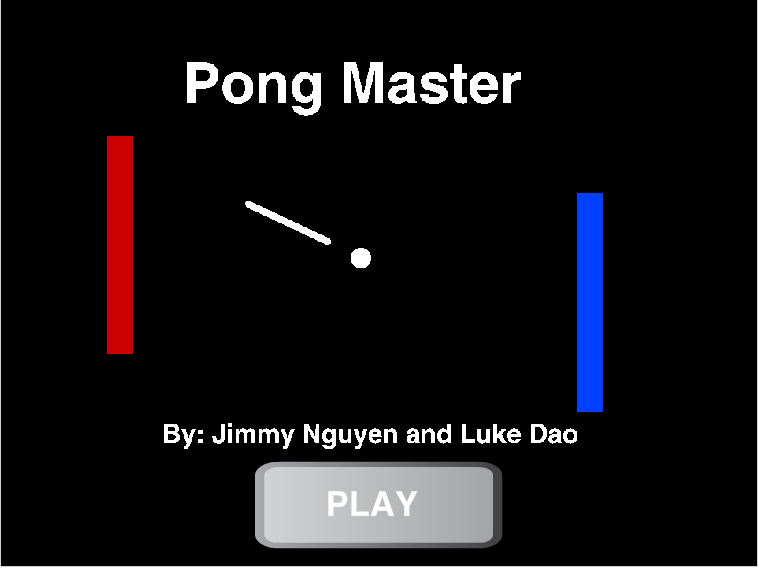
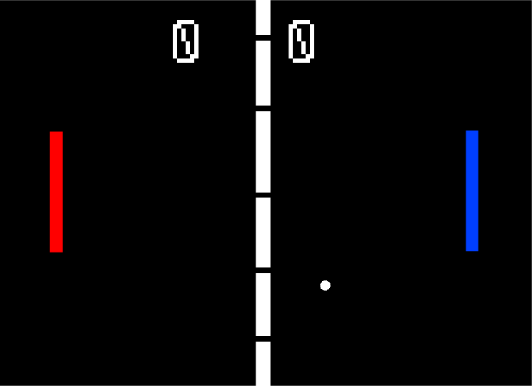
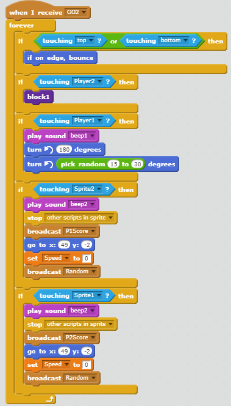
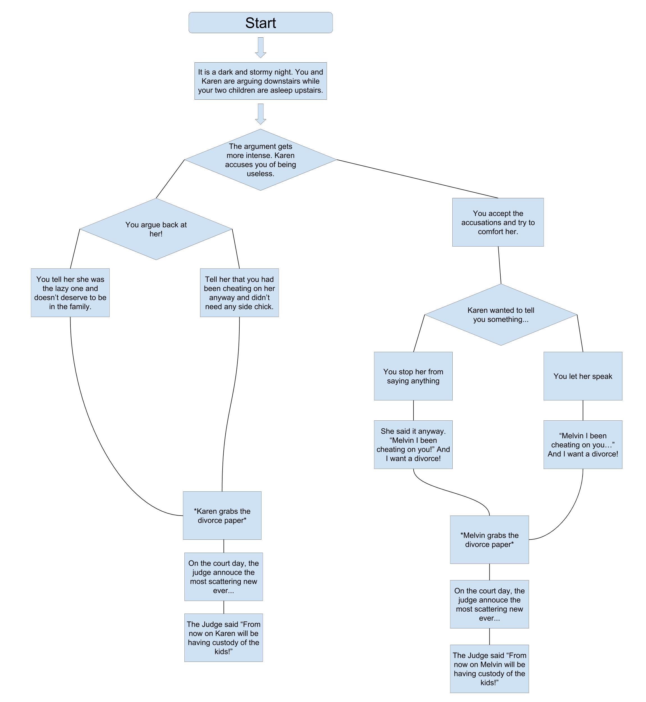

Pong Master
 Context
The point of this game is to beat the other player by getting to 10 points first. When we created this game the scoring system is a sprite that changes costume when a score is made. The randomness occurs when we make the ball respawn and when it bounces off the players to make it so it can be unpredictable. The game gets more difficult by adding another ball after 15 seconds in. A player loses when the other player scores 10 points on them.
Reflection
We created this game because we first wanted to make a Mario game but we noticed it was complicated and we would need more time. We chose this type of game because we just love balls. The two successful part while developing this game is making the coding of the ball and the scoreboard. Both were complicated in their own way. The two obstacles we faced was trying to make the players not run out of the map and stopping the ball everytime it respawn. We were able to overcome this by adding a block that bounces the player back and for the ball we did this by adding a block that stops all scripts in the sprite to reset it. If we had more time we would have added levels to the game and probably make the players and the balls faster.
Algorithm
I believe this algorithm is significant to the game because without this algorithm the ball would just pass through the players. This algorithm make it so the ball would bounces off the players and the walls. It also make it so the ball would stop after respawning.


The Lovers' Quarrel
In this story it talks about a lovers' quarrel. Throughout the story they continue quarreling so they both decided to divorce each other.
When we made the game we first added a typing speed for the game. The difficultiess we experience while making the game was trying to make the decisions because sometime the name for the path was too vague so we get confused. We were able to solve to by changing the names to be more specific. The advantages of building a program by abstracting the scences into funtion is that it made it easier to orginizes especially when you allow the reader to choose a path. When I think back on the time we read others' stories i particularly like Batman's Trilogy due to it's variety of paths and the plot.